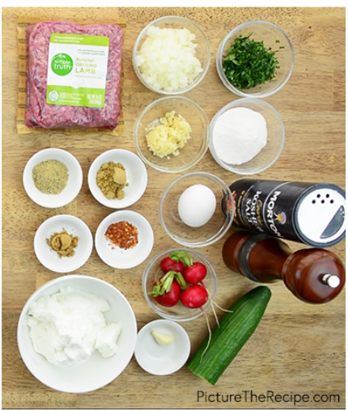
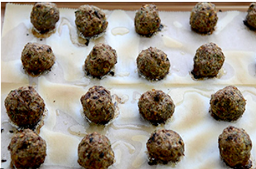
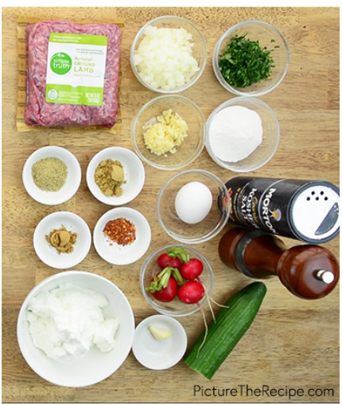
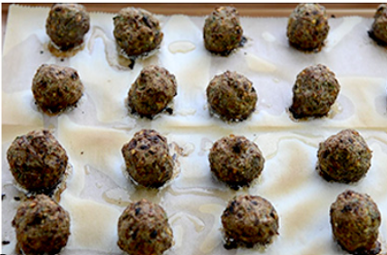

Combine the ground lamb, onion, garlic, parsley, fennel seed, coriander powder, cumin powder, crushed red pepper, rice flour, egg, salt and pepper together well.
Mix with your hands if needed.
Form about 20 palm sized meatballs rolling them in your hands.
Place on a parchment lined baking tray and allow to set for about 10 mins in the fridge while you preheat the oven to 450F.
Bake the meatballs at 450F for about 15-20 mins.
While the meatballs are cooking, mince/grate 1-2 cloves of garlic into the Greek yogurt.
Season with salt and stir well.
Slice the radishes & cucumbers into half-moons and season them with salt.
To plate spoon some of the garlic yogurt on the bottom of the pate, top with meatballs...garnish with sliced radishes & cucumbers and top with mint chimichurri sauce.
 


